Je suis Petru Hamon, et j’ai le plaisir de me présenter à vous en
tant que chef privé.
Après avoir perfectionné mon art dans des écoles prestigieuses et
des restaurants étoilés, j'ai eu l’immense privilège de diriger un
restaurant gastronomique en Corse pendant quatre années
enrichissantes.
Aujourd'hui, je souhaite partager avec vous des expériences
culinaires uniques, des moments intimes, où chaque plat raconte
une histoire, chaque repas devient une célébration.
Ma Cuisine
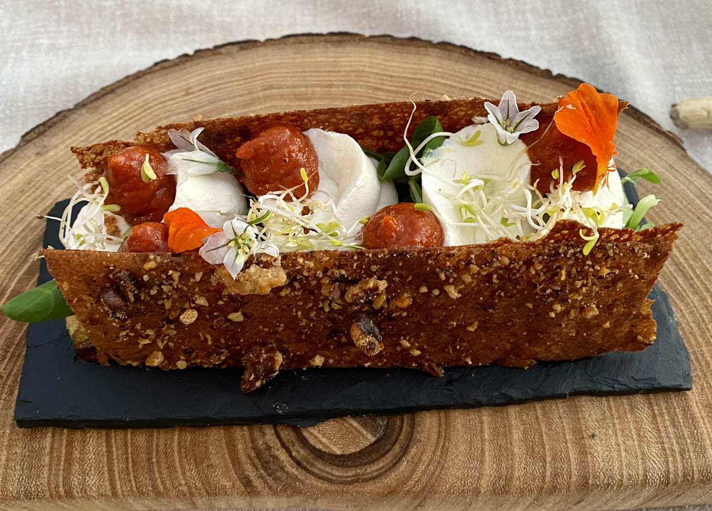
Ma cuisine, élégante et raffinée, marie harmonieusement des
influences variées pour émerveiller vos papilles.
Ensemble, nous définissons un menu personnalisé, élaboré avec des
produits locaux de saison, où chaque détail est minutieusement
pensé.
Ce serait un honneur de partager ma passion pour la gastronomie
avec vous et de contribuer à la magie de vos événements privés.
Une expérience culinaire sublimée par des accords mets & vins sur
mesure.
Grace à ma formation en dégustation, accords mets & vins, je
travaille en étroite collaboration avec vous pour élaborer des
menus en parfaite harmonie avec les vins de votre choix.
Que vous souhaitiez mettre en avant une sélection de vins, les
choisir dans votre cave ou me laisser décider de leur assortiment,
chaque plat sera élaboré afin de vous offrir une expérience
gustative inoubliable.
Si le menu est déjà défini, je peux également vous proposer des
vins soigneusement sélectionnés, en parfait accord avec les
saveurs choisies.
À Domicile
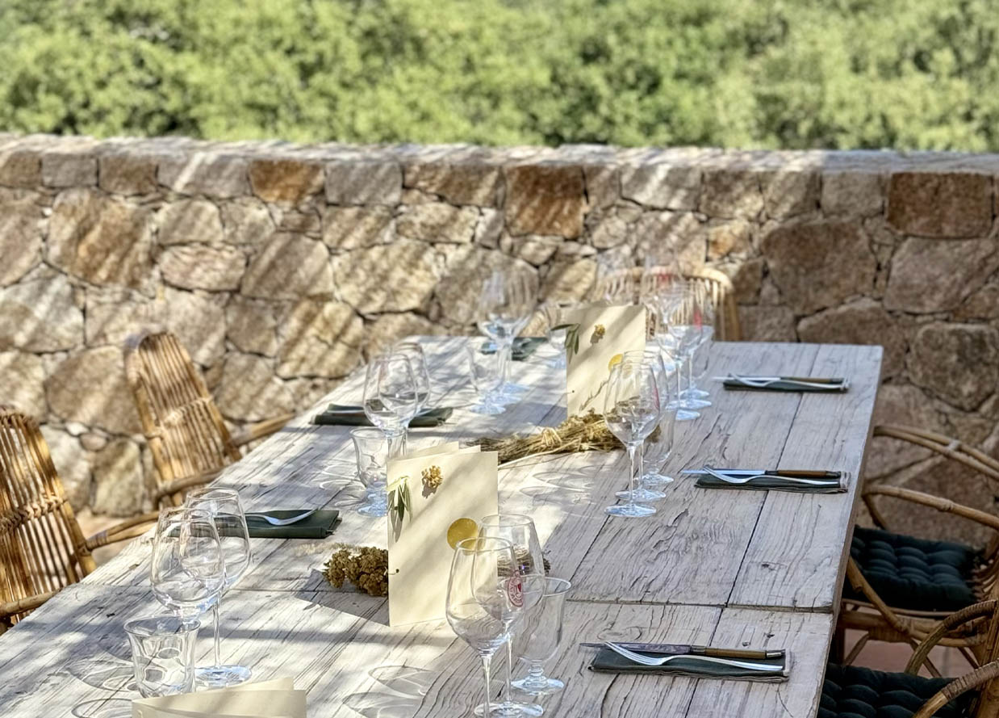
Découvrez l'excellence culinaire chez vous.
Vous rêvez d'une expérience gastronomique unique sans quitter le
confort de votre maison ?
Mon service de chef à domicile est là pour transformer vos repas
ordinaires en moments extraordinaires !
Pourquoi choisir mes services?
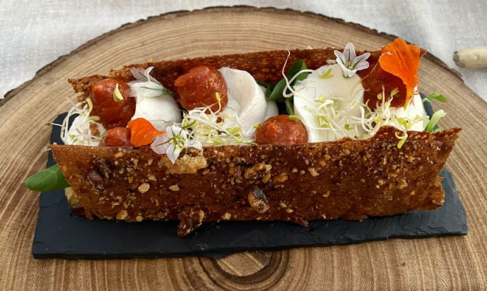
Cuisine Personnalisée
Je crée pour vous des menus sur mesure, adaptés à vos goûts et
préférences alimentaires.
Que vous soyez amateur de cuisine française classique, de saveurs
exotiques ou de plats végétariens raffinés, chaque repas est une
œuvre d'art culinaire conçu spécialement pour vous.
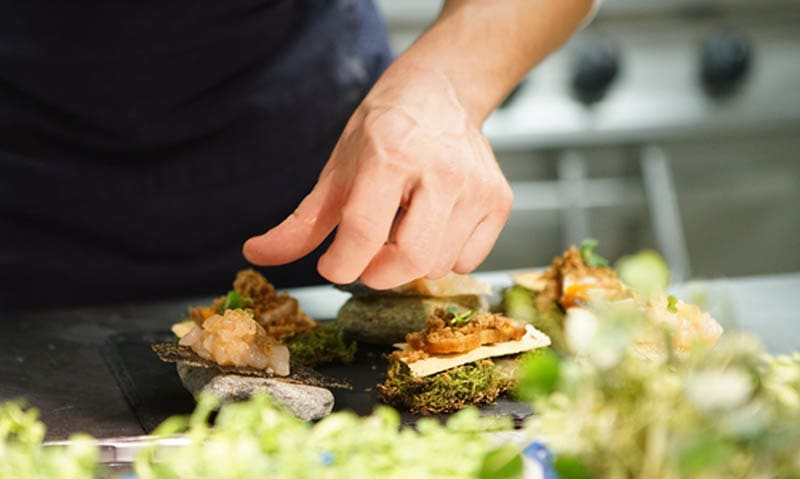
Ingrédients Frais et de Qualité
Je sélectionne les meilleurs produits locaux et de saison pour
garantir des plats savoureux et sains.
La fraîcheur et la qualité sont au cœur de mon engagement.
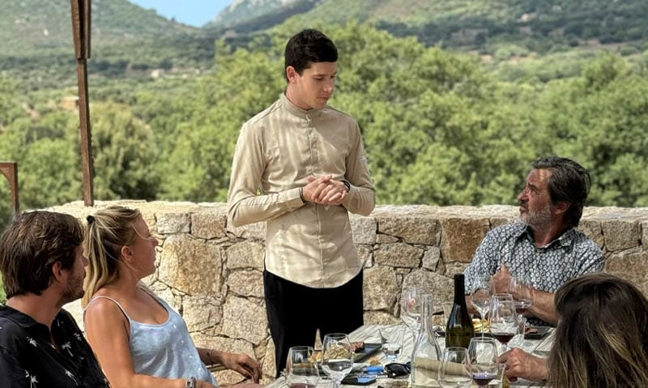
Service complet
Profitez d'un service complet incluant l'achat des ingrédients, la
préparation des plats, le service à table et même le nettoyage de la
cuisine.
Vous n'avez qu'à vous asseoir, vous détendre et savourer chaque
bouchée.
Expérience unique
Que ce soit pour un dîner romantique, une réunion familiale, un
événement spécial ou simplement pour le plaisir de déguster des
plats exquis, je crée pour vous une ambiance culinaire mémorable.
Le Processus
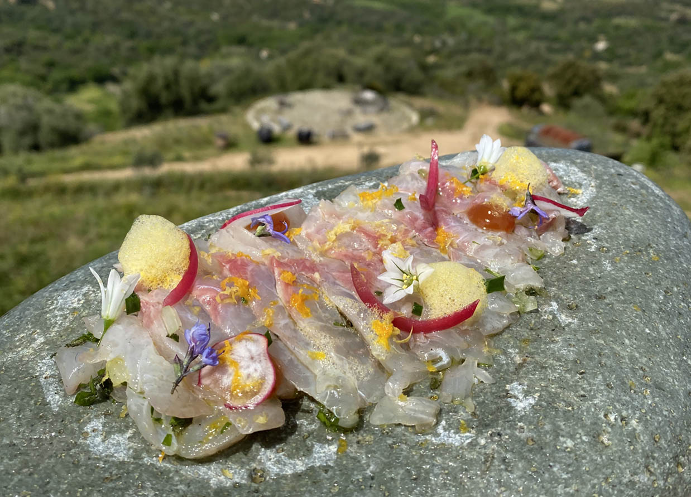
Une Gastronomie à votre portée.
Imaginez déguster un repas gastronomique digne des plus grands
restaurants, préparé spécialement pour vous dans votre propre
cuisine.
Je transforme vos repas en une véritable expérience gastronomique,
en apportant mon expertise et ma passion directement chez vous.
contactez-moi
Faites-moi part de vos envies et besoins spécifiques.
1
conception du menu
Je vous propose un menu personnalisé.
2
jour j
Détendez-vous pendant que je prépare et sert votre repas.
3
profitez
Savourez des plats délicieux et laissez moi m’occuper du reste!
4
Cours de Pâtisserie
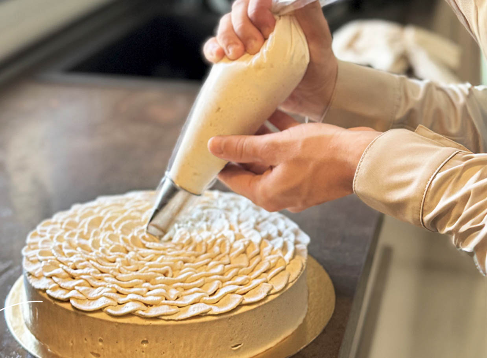
Je suis enchanté de vous présenter mes cours de pâtisserie, de
partager mes savoirs-faire et techniques avec vous, chez vous.
Que vous soyez novice ou que vous ayez déjà une certaine
expérience, mes cours s'adaptent à tous les niveaux.
Ensemble, nous explorerons des recettes classiques et innovantes,
des éclairs fondants aux macarons délicats, en passant par des
gâteaux spectaculaires qui éblouiront vos proches. Chaque session
est conçue pour être à la fois éducative et ludique.
Vous apprendrez non seulement les techniques de base et avancées,
mais aussi les astuces pour réussir vos pâtisseries à coup sûr.
Pourquoi choisir mes cours de Pâtisserie?
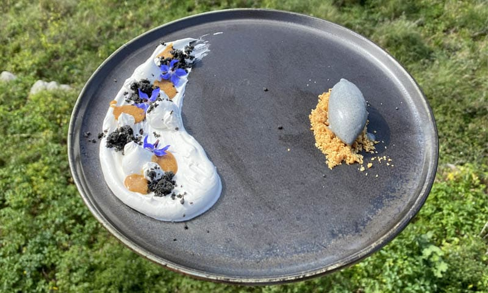
Expertise personnalisée
Je m'engage à vous offrir un accompagnement personnalisé et adapté à
votre rythme, directement chez vous.
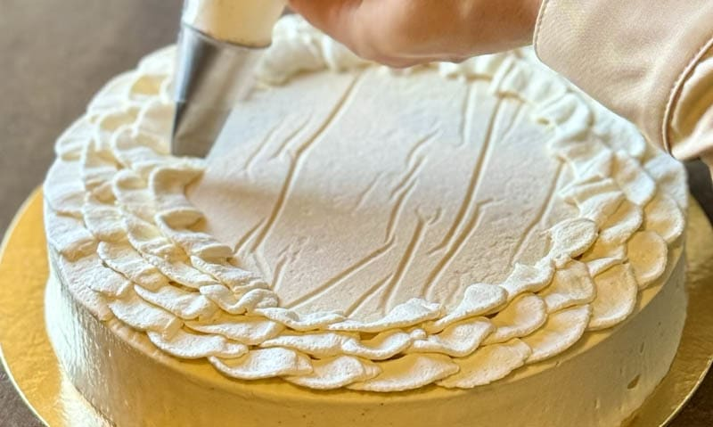
Confort et commodité
Ne vous déplacez pas, je viens avec tout le matériel nécessaire pour
que vous puissiez vous concentrer pleinement sur l'apprentissage.
Ambiance conviviale
Les cours se déroulent dans une ambiance chaleureuse et conviviale,
propice aux échanges et à la créativité.
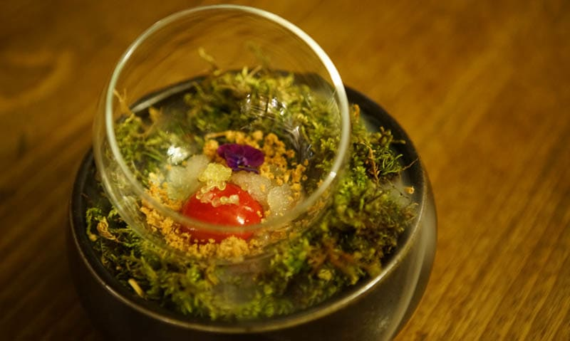
Recettes exquises
Découvrez et maîtrisez des recettes qui impressionneront vos amis et
votre famille.
Témoignages
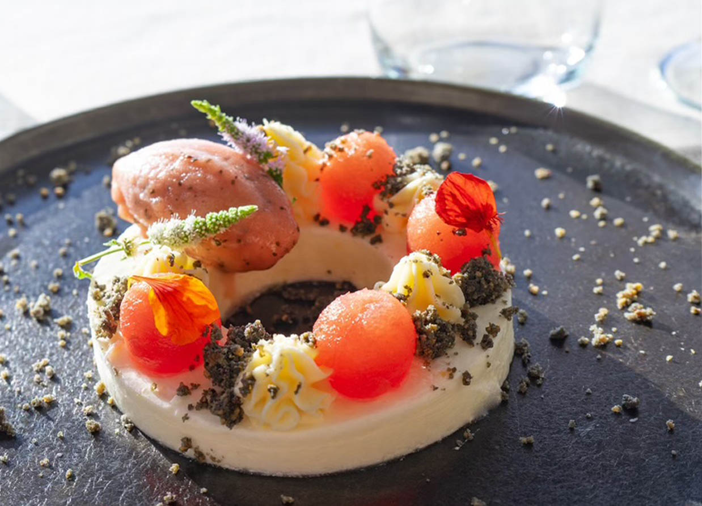
repas en famille
Nous avons vécu une soirée inoubliable grâce au chef, qui nous a
proposé un menu sur mesure d'une grande finesse. Les accords mets et
vins étaient parfaits, chaque plat étant sublimé par le vin choisi
avec soin. Le service était impeccable, et les explications du chef
ont enrichi notre expérience. Un véritable voyage culinaire dans le
confort de notre maison. Nous recommandons vivement cette expérience
unique et raffinée !
Claire
excellent repas
Le chef a créé un menu sur mesure pour accompagner nos vins, et
chaque plat a sublimé les arômes de nos bouteilles à la perfection.
Les accords étaient d’une justesse incroyable, et la créativité des
assiettes, tout comme la qualité du service, ont rendu cette soirée
inoubliable. Une expérience gastronomique exceptionnelle pour tout
amateur de vin et de bonne cuisine.
Jean-Noël
cours de pâtisserie
Le chef Petru Hamon m'a donné des cours de pâtisserie. Ce fut un
moment de partage et d'apprentissage dans une ambiance conviviale.
C'est un chef à l'écoute de nos attentes, perfectionniste et
minutieux. Ça a été un réel plaisir de travailler avec lui, une
formation très enrichissante.
Si vous souhaitez vous perfectionner ou apprendre la pâtisserie, je
vous recommande vivement le chef Petru Hamon !